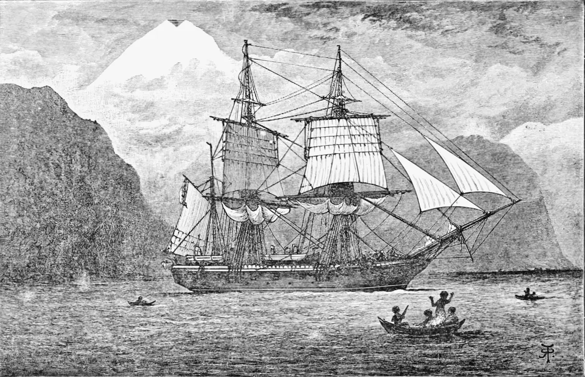

Post
The voyage of Charles Darwin
A trip around the world

All aboard the Beagle
This map shows the voyage of the HMS Beagle (1831–1836), on which Charles Darwin began to develop the theory of evolution through natural selection. Darwin found the Beagle “most beautiful” and elegantly fitted out with mahogany.
The ship was a three-masted square-rigger armed with ten guns. She was built to carry seventy-four people, including a squad of marines, an artist, a missionary for Tierra del Fuego, Darwin as naturalist, and three Fuegians whom Captain FitzRoy had seized as hostages on a previous trip and was now taking home.
Since the Beagle was only about ninety feet long and had to carry enormous supplies for its planned three-year voyage, everyone was cramped for space. Darwin, exceptionally, was given a very small cabin under the forecastle for the specimens he was expected to collect. He later said that the absolute necessity of tidiness in the cramped space of the Beagle helped to give him his methodical work habits.
After having been twice driven back by heavy southwestern gales, Her Majesty’s ship Beagle, a ten-gun brig, under the command of Captain Fitz Roy, R. N., sailed from Devonport on the 27th of December, 1831.
— Charles Darwin, The Voyage of the Beagle (1839)
On December 27, 1831, with a favorable wind, the Beagle lifted anchor and began its journey. In ten days they were sixteen hundred miles southwest of Plymouth. Darwin was dreadfully seasick for the first two weeks, as he was to be much of the time they were at sea for the coming five years. Out of port only three days, he wrote that he had often thought he would repent the trip but had had no idea “with what fervor I should do so.”
